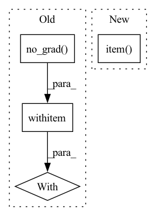

Pattern ID :19403
Before Change
else:
self.update_J_Broyden(h, self.prev_Y[0], self.current_Y)
with torch .no_grad():
self.update_hess()
self.update_grad(self.current_Y)
self.iteration += 1
After Change
self.L = min(1e9, self.L * self.Lup)
return
elif self.iteration > 0:
print("LM loss, best loss, L: ", loss.item(), np.nanmin(self.loss_history[:-1]), np.nanmin(self.loss_history[:-1]) - loss.item() , self.L)
rho = self.rho(np.nanmin(self.loss_history[:-1]), loss, h)
self.rho_history.append(rho)
print("rho: ", rho.item())In pattern: SUPERPATTERN
Frequency: 5
Non-data size: 4
Instances Fragment ID: 63345982
Project Name: connorstoneastro/autoprof
Commit Name: edac78536835e4e35ffd761462ea1607fd4fdbcc
Time: 2022-12-07
Author: connorstone628@gmail.com
File Name: autoprof/fit/lm.py
M Class Name: LM
N Class Name: LM
M Method Name: step(2)
N Method Name: step(2)
M Parent Class: BaseOptimizer
N Parent Class: BaseOptimizer
M File Name: autoprof/fit/lm.py
N File Name: autoprof/fit/lm.py
M Start Line: 85
M End Line: 154
N Start Line: 87
N End Line: 160
Before Change
if self["I(R)"].value is not None:
return
with torch .no_grad():
profR = self.profR.detach().cpu().numpy()
target_area = self.target[self.fit_window]
X, Y = target_area.get_coordinate_meshgrid_torch(self["center"].value[0], self["center"].value[1])
X, Y = self.transform_coordinates(X, Y)After Change
R = self.radius_metric(X, Y).detach().cpu().numpy()
rad_bins = [profR[0]] + list((profR[:-1] + profR[1:])/2) + [profR[-1]*100]
raveldat = target_area.data.detach().cpu().numpy().ravel()
I = binned_statistic(R.ravel(), raveldat, statistic = "median", bins = rad_bins)[0] / target_area.pixelscale.item() **2
N = np.isfinite(I)
if not np.all(N):
I[np.logical_not(N)] = np.interp(profR[np.logical_not(N)], profR[N], I[N]) Fragment ID: 63345983
Project Name: connorstoneastro/autoprof
Commit Name: 923a10353d62a7b25e21873fc29bfb9975a0e9bb
Time: 2022-12-01
Author: connorstone628@gmail.com
File Name: autoprof/models/_shared_methods.py
M Class Name: AnonimousClass
N Class Name: AnonimousClass
M Method Name: nonparametric_initialize(1)
N Method Name: nonparametric_initialize(1)
M Parent Class:
N Parent Class:
M File Name: autoprof/models/_shared_methods.py
N File Name: autoprof/models/_shared_methods.py
M Start Line: 187
M End Line: 205
N Start Line: 188
N End Line: 204
Before Change
dfs = []
// Keep track of percentage of test triples per relation type
with torch .no_grad():
for rid in tqdm(torch.unique(test_spo[:, 1]), desc="Relation"):
// Get all test triples with this relation
test_filt = test_spo[test_spo[:, 1] == rid]
After Change
// Keep track of percentage of test triples per relation type
for rid in tqdm(torch.unique(test_spo[:, 1]), desc="Relation"):
rid = rid.item()
// Get all test triples with this relation
test_filt = test_spo[test_spo[:, 1] == rid]
Fragment ID: 63345980
Project Name: tsafavi/codex
Commit Name: 3dddca246e4fb616cef251bafb32dac648e8eedb
Time: 2020-07-08
Author: tsafavi@umich.edu
File Name: scripts/baseline.py
M Class Name: AnonimousClass
N Class Name: AnonimousClass
M Method Name: main(0)
N Method Name: main(0)
M Parent Class:
N Parent Class:
M File Name: scripts/baseline.py
N File Name: scripts/baseline.py
M Start Line: 171
M End Line: 222
N Start Line: 171
N End Line: 218
Before Change
def accuracy(output, target, topk=1):
Computes the accuracy over the k top predictions for the specified values of k
with flow .no_grad():
// TODO: support tuple topk=(1, 5, 10)
// maxk = max(topk)
batch_size = target.size(0)
_, pred = output.topk(topk, 1, True, True)
pred = pred.transpose(0, 1)After Change
pred = pred.t()
correct = pred.eq(target.reshape(1, -1).expand_as(pred))
return [
(correct[: min(k, maxk)].reshape(-1).float().sum(0) * 100.0 / batch_size).item()
for k in topk
]
Fragment ID: 63345981
Project Name: oneflow-inc/libai
Commit Name: 371360b9b903675607d2f92544962eb8b2330a17
Time: 2022-02-13
Author: 48727989+rentainhe@users.noreply.github.com
File Name: libai/evaluation/cls_evaluator.py
M Class Name: AnonimousClass
N Class Name: AnonimousClass
M Method Name: accuracy(3)
N Method Name: accuracy(3)
M Parent Class:
N Parent Class:
M File Name: libai/evaluation/cls_evaluator.py
N File Name: libai/evaluation/cls_evaluator.py
M Start Line: 31
M End Line: 49
N Start Line: 28
N End Line: 36
Before Change
def model_image(fig, ax, model, image = None, showcbar = True, **kwargs):
if image is None:
with torch .no_grad():
model.sample(model.model_image)
image = model.model_image.data.detach().cpu().numpy()
imshow_kwargs = {After Change
for M in model.model_list:
if isinstance(M,models.Sky_Model):
try:
sky_level = (10**(M["sky"].value)*model.target.pixelscale**2).detach().cpu().item()
print("subtracting sky level: ", sky_level)
break
except Exception as e:
print(e) Fragment ID: 63345979
Project Name: connorstoneastro/autoprof
Commit Name: 53be3d025f16413cb88735d0e934f1282bd41a02
Time: 2022-12-12
Author: connorstone628@gmail.com
File Name: autoprof/plots/image.py
M Class Name: AnonimousClass
N Class Name: AnonimousClass
M Method Name: model_image(5)
N Method Name: model_image(5)
M Parent Class:
N Parent Class:
M File Name: autoprof/plots/image.py
N File Name: autoprof/plots/image.py
M Start Line: 47
M End Line: 68
N Start Line: 48
N End Line: 69